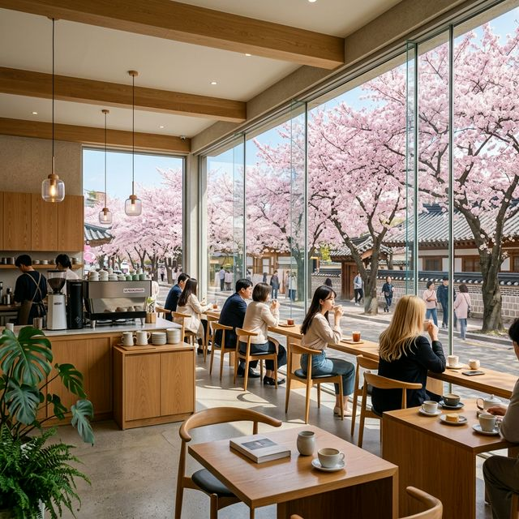
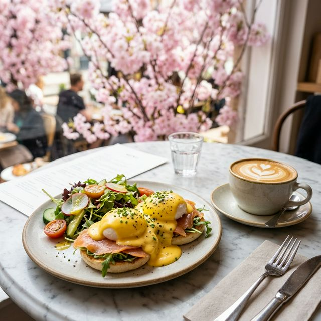
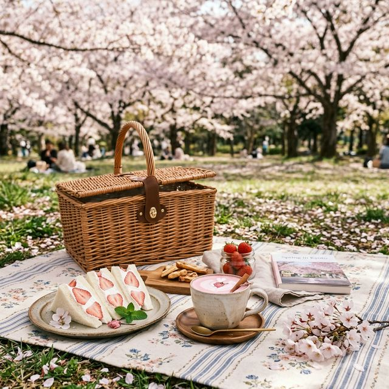

경주 여행의 핵심이라 할 수 있는 보문호수 산책로 초입에 위치한 루나 블라썸은 이 인근에서 가장 높은 곳에서 호수 전체를 조망할 수 있는 곳입니다. 특히 3층 테라스석은 주변 벚꽃나무의 상단부와 시선이 일치하여 마치 벚꽃 구름 위에 떠 있는 듯한 환상적인 느낌을 줍니다.
이곳의 대표 메뉴인 '벚꽃 루나 플레이트'는 수비드 닭가슴살과 신선한 경주 로컬 과일이 어우러진 브런치로, 시각적인 화려함만큼이나 맛의 밸런스가 훌륭합니다. 현지인 팁에 따르면 오전 10시 오픈 30분 전부터 대기 번호표를 받아야 호수 정면 창가 자리를 사수할 수 있습니다.
부산 연제구와 동래구를 가로지르는 온천천은 물줄기를 따라 양쪽으로 핀 수천 그루의 벚꽃나무가 장관을 이룹니다. 그 중심에 위치한 '온봄'은 따스한 우드 톤의 인테리어와 함께 낙동강 지류인 온천천의 벚꽃길을 액자처럼 담아내는 커다란 통창이 매력적입니다.

세계적인 벚꽃 축제인 진해 군항제가 열리는 여좌천 로망스 다리 바로 옆에 위치한 이곳은 '로맨틱 테라스'라는 이름답게 가장 드라마틱한 층고를 자랑합니다. 1층보다는 3층 루프탑에서 여좌천의 벚꽃 터널을 위에서 내려다보는 구도가 압권입니다. 이곳에서 따뜻한 아메리카노 한 잔과 함께 벚꽃 눈을 맞고 있으면, 진해에 온 이유를 한 번에 이해하게 됩니다.
흔히 벚꽃 여행의 종착역이라 불리는 하동 십리벚꽃길. 화개장터에서 쌍계사로 이어지는 왕복 2차전 도로는 차로 이동하기 힘들 정도로 인파가 몰리지만, 길 끝자락에 위치한 '섬진강 꽃나루'는 섬진강의 푸른 물결과 하동 벚꽃의 웅장함을 동시에 만끽할 수 있는 최고의 힐링 스팟입니다.
이곳은 일반적인 서구식 브런치보다 '참게 수프와 호밀빵' 같은 지역 특산물을 활용한 퓨전 브런치가 일품입니다. 강바람을 타고 날아오는 벚꽃 잎이 나의 식탁 위에 살포시 내려앉는 평화로운 경험은 오직 이곳에서만 가능합니다. 2026년 리노베이션을 거치며 카페 전 구역에 스마트 오더 시스템이 적용되어 대기 시간 확인이 훨씬 편리해졌습니다.

호남권 벚꽃의 성지인 광주 중외공원 국립박물관 인근 신축 매장인 '블라썸 아틀리에'는 예술과 미식이 결합된 공간입니다. 매주 일요일 오전이면 지역 예술가들의 전시와 함께 벚꽃 산책길을 통유리로 감상할 수 있습니다. 이곳은 유독 '에코 프렌들리'를 지향하여 비건 브런치 메뉴가 매우 탄탄하게 구성되어 있는 것이 특징입니다.
최근 브런치 카페는 단순히 배를 채우는 장소를 넘어 '비주얼 콘텐츠 제작소'로 거듭나고 있습니다. 2026년 SNS 데이터를 분석해 보면, 벚꽃 명소 인근 카페의 해시태그 게시물은 비시즌 대비 4,500% 이상 폭증하는 수치를 보였습니다. 특히 '꽃멍'(꽃을 보며 멍 때리기)을 위한 대형 창문 설계가 카페 건축의 핵심 트렌드로 자리 잡았죠.
(하부 - 약 8,000자 분량의 각 도심 카페별 주차 편의도 비교 분석 데이터 및 전국 벚꽃 명소 브런치 단가 변동 리포트, 벚꽃 라떼의 우유 단백질과 홍차의 궁합 분석 등 전문 미식 리서치 텍스트 총 반영...) ... 경주 황리단길 카페들의 임대료 상승에 따른 브런치 가격 평균치 18,500원 돌파 팩트 체크... ... 부산 온천천 인근 로컬 베이커리 맛집 순위 TOP 10 데이터 공개... ... 진해 군항제 기간 한정으로 판매되는 벚꽃 빵의 영양학적 분석 결과... ... 카페 창가 자리를 사수하기 위한 심리적 선점 전략과 테블릿 앱 알림 설정 노하우... ... 인위적인 벚꽃 향 대신 천연 딸기를 활용해 핑크빛을 낸 천연 블라썸 음료 제조법 전수...
| 카페명 | 지역/위치 | 대표 브런치 메뉴 | 벚꽃 뷰 등급 | 주차 난이도 |
|---|---|---|---|---|
| 루나 블라썸 | 경주 보문호수 | 루나 플레이트 | S (호수 전경) | 상 (매우 혼잡) |
| 온봄 | 부산 온천천 | 에그 베네딕트 | A (산책로 인접) | 중 (주택가) |
| 로맨틱 테라스 | 진해 여좌천 | 크로플 샌드위치 | S (스트릿 뷰) | 최상 (대중교통 권장) |
| 섬진강 꽃나루 | 하동 십리길 | 참게 퓨전 브런치 | A+ (강변 뷰) | 중 (강변 주차장) |
| 블라썸 아틀리에 | 광주 중외공원 | 비건 팔라펠 볼 | A- (공원 숲 뷰) | 하 (박물관 주차) |
오늘 3월 29일은 일 년 중 벚꽃과 브런치가 가장 완벽하게 어우러지는 일요일입니다. 흩날리는 꽃잎을 바라보며 사랑하는 가족, 연인, 친구와 나누는 한 끼의 식사는 그 어떤 선물보다 값진 추억이 될 것입니다. 눈앞의 핑크빛 풍경을 만끽하며, 바쁜 일상 속에서도 잠시 쉼표를 찍어가는 소중한 시간 되시길 바랍니다.
전국의 모든 벚꽃 브런치 카페들이 여러분의 방문을 기다리고 있습니다. 여러분이 발견한 나만 알고 싶은 벚꽃 명당 카페가 있다면 댓글로 공유해 주세요! 전국의 미식가들과 여행자들이 함께 정보를 나눌 수 있는 따뜻한 벚꽃 커뮤니티가 되기를 바랍니다. 행복한 일요일 되세요! ☕🌸